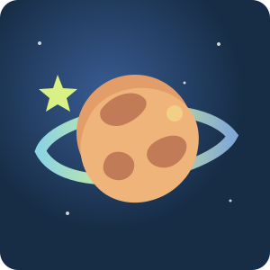

Природа · 01
Полярне сяйво — це світло з космосу
Кольорові смуги виникають, коли заряджені частинки Сонця взаємодіють із газами у верхніх шарах атмосфери Землі.
Ще про природуДізнавайся світ граючи
Короткі вікторини про природу, науку, культуру й місця, які дивують. Перевіряй цікавість — один факт за раз.
Нові запитання — новий привід здивуватися
Трохи несподіваного
Кожна картка — маленька подорож у тему. Обери, що цікавить сьогодні.
Природа · 01
Кольорові смуги виникають, коли заряджені частинки Сонця взаємодіють із газами у верхніх шарах атмосфери Землі.
Ще про природу
Космос · 02
Венера обертається навколо своєї осі повільніше, ніж рухається по орбіті навколо Сонця.
Ще про космосМова · 03
Історія слів зберігає сліди торгівлі, подорожей і зустрічей народів — навіть у звичайній щоденній розмові.
Ще про культуруОбирай напрям
Короткі раунди допомагають вчитися без поспіху. Почни з улюбленого.
Таблиця результатів
Приклад таблиці для демонстрації розмітки та стилів. Імена й результати умовні.
| Rank | Name | Score | Country | Category | Date |
|---|---|---|---|---|---|
| 01 | Гравець 01 | 980 | Україна | Природа | 17.11.2026 |
| 02 | Гравець 02 | 920 | Франція | Космос | 17.11.2026 |
| 03 | Гравець 03 | 870 | Японія | Наука | 16.11.2026 |
| 04 | Гравець 04 | 810 | Польща | Культура | 16.11.2026 |
Це макет таблиці; реєстрація й збереження балів не підключені.
Міні-виклик дня
Одне запитання — одна хвилина на цікаву здогадку.
Є ідея чи запитання?
Можеш запропонувати тему для наступної вікторини або поділитися цікавим фактом.